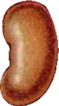
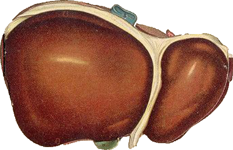
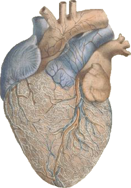
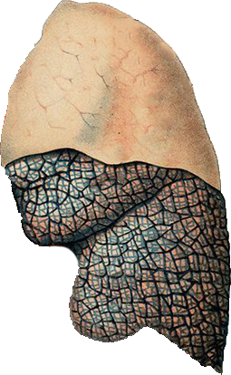
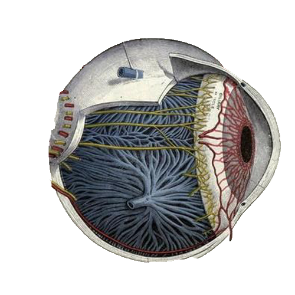
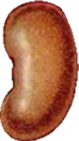
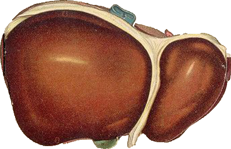
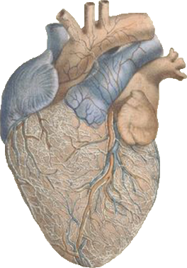
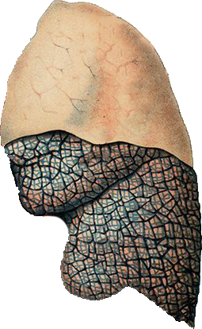
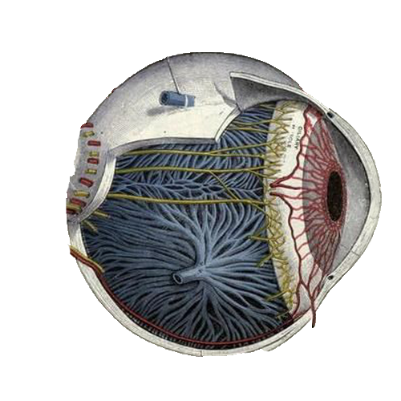

器官介绍
死亡是一段生命的结束，也可以是另一段生命的开始。
当你的血液在他人的身体里回温、盘旋，当你的心脏在这个世界上继续跳动，你是否也能感受到自己与生命的最后一丝丝连接？ 对于你我而言，器官捐献是对死亡最郑重的告别.
点击器官获取相关信息
 









肾脏
肾脏是人体重要的器官，如若出现肾病，患上了尿毒症，就可能需要进行肾脏移植。当出现肾衰竭时，患者可以接受肾脏捐献，通过获得匹配的肾脏重获新生。
肝脏
活体肝移植就是从健康捐肝人体上切取部分肝脏作为供肝移植给患者的手术方式，如果捐肝的人和接受肝脏的人之间有血缘关系，又叫亲体肝移植。活体肝移植是解决世界性供肝短缺的重要手段。
心脏
心脏移植是在临床比较有经验的医院比较成熟的临床技术，就在器官捐献对于终末期心脏病、心衰，通过药物没有办法得到缓解，不可能逆转。心脏严重处于四期的时候，我们通过捐献的心脏通过外科手术的方法移植到患者的体内，代替有病变的心脏，这样才能够达到正常的心脏功能。
肺脏
目前肺移植的供体主要来源于爱心捐献，比如有出血性脑病或者车祸伤，出现脑死亡，这时患者病变只是波及到脑部或者心脏、其他脏器，但是他的肺脏是完好的，如果患者家属或者有爱心捐献的意愿或者是患者在出现意外之前也签订过器官捐献的意向同意书，这个时候就可以作为潜在的肺移植供体。
眼角膜
捐献眼角膜是指去世后捐献，但生前要办好有关手续。捐献者必须是生前的自愿或身后家属同意，以尊重自愿为原则。年龄5至60岁为好，可放宽至70岁，如用作医学科研则不受年龄和疾病的限制，捐献眼角膜或眼球是无偿的。现今世界都是无偿自愿捐献的。
器官捐献以自愿、无偿为原则捐献方式有两种。
一是有完全民事行为能力的公民通过书面自愿申请器官捐献登记， 并且没有撤销登记，待其身故后进行器官捐献； 二是公民生前未表示不同意捐献其器官， 待其身故后，其配偶、成年子女、父母以书面形式共同表示同意的器官捐献。
相关示例
2020年5月6日，在上海开网约车的小任突然倒在路边，紧急送医抢救治疗无效，宣告脑死亡。在得到家属的理解和支持后，小任捐献了心脏、肝脏、双肾和胰腺，使五位器官衰竭患者获得了新生。
19岁姑娘“九月”因为头痛待查住进了复旦大学附属中山医院，被诊断为大面积脑梗塞。虽经积极救治，但病情仍不见好转。那年9月1日，原本是“九月”大二开学的日子，可父母却等来了唯一女儿已经脑死亡的噩耗。“九月之前向我们表达过捐献器官的愿望，我们想帮她实现。”后来，“九月”的肝脏、肾脏和角膜让五位患者重获新生。

2016年，27岁的冯建被诊断出先天性脑血管畸形，从发病到离世仅半个月的时间，突然的打击对一家人来说无比心痛。2016年7月4日，医生宣布冯建死亡不久，器官协调员找到其妹妹，称伊犁有个19岁男孩需要肾源，如果半个月内得不到肾源就有死亡的危险。随后，其妹妹和父母无偿捐献出冯建的眼角膜、肾、肝等器官，挽救了5名受捐者的生命。